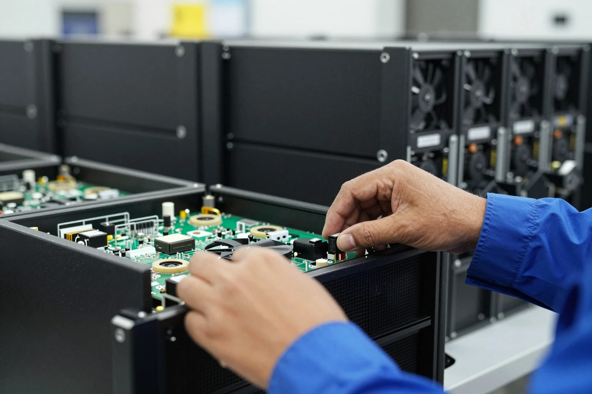

México ya es uno de los países que más ganan con el equipo para la IA
Según la Organización Mundial del Comercio (OMC), la participación de México en las exportaciones mundiales de bienes para inteligencia artificial pasó de 2.6% en 2023 a 4.8% en el primer semestre de 2026. Fue el tercer mayor avance entre los diez principales exportadores, solo detrás de Corea del Sur y Vietnam. En el camino, México superó a Países Bajos y quedó cerca de Malasia, que tiene 5.6%.
Lo que más empuja son los servidores: las computadoras de alta capacidad que llenan los centros de datos donde funcionan los modelos de IA. De acuerdo con S&P Global Market Intelligence, citada por Expansión, México exportó estos equipos por 82,900 millones de dólares en el primer semestre, sobre todo a Estados Unidos.
- OMC
- Organización Mundial del Comercio: organismo internacional que fija reglas del comercio entre países y publica sus estadísticas.
- Servidor
- Computadora de alta capacidad diseñada para trabajar sin parar dentro de un centro de datos. Es donde se guardan los datos y corren los modelos de IA.
- Punto porcentual
- La diferencia entre dos porcentajes. Pasar de 2.6% a 4.8% es subir 2.2 puntos porcentuales.
- S&P Global Market Intelligence
- Empresa estadounidense de datos e información financiera sobre mercados y comercio.
- T-MEC
- Tratado comercial entre México, Estados Unidos y Canadá que permite vender entre los tres países con pocos impuestos.
- Centro de datos
- Edificio lleno de servidores que guardan información y hacen los cálculos de servicios de internet, incluida la IA. Funciona día y noche y consume mucha electricidad.
- Modelo de IA
- Programa entrenado con enormes cantidades de datos para hacer tareas como redactar, responder preguntas o reconocer imágenes. ChatGPT y Gemini funcionan con modelos de este tipo.
Si trabajas en manufactura electrónica, el auge de la IA ya es una línea de producción, no una noticia lejana. La otra cara es la dependencia: estas exportaciones van sobre todo a Estados Unidos, así que un cambio en sus aranceles o en el T-MEC podría afectarlas.
La IA no solo se programa: también se ensambla, y México ya ensambla más que casi nadie.
Ver fuente ↗